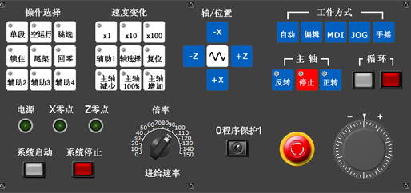
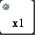
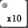
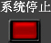
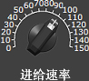
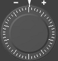
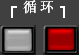

| 大连机床厂Fanuc 0i Mate-TB |
| 返回<<< |

操作选择：单段/空运行/跳选/锁住/尾架/回零


快速进给倍率 速度变化：轴选择/复位/主轴减少/主轴100%/主轴增加 工作方式：自动/编辑/MDI/JOG/手摇 主轴反转/停止/正转 手动X/Z轴进给 电源指示灯 X回参考点指示灯 Z回参考点指示灯 系统启动
系统停止
进给速率
手轮 程序保护开关
循环启动/停止 紧停